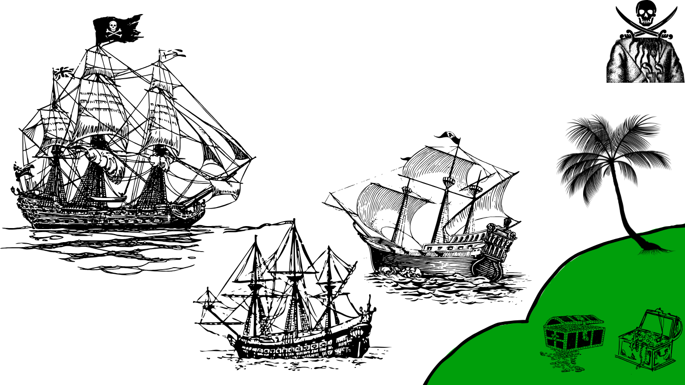

Muitos se perguntam, onde todo os tesouros que já foram encontrados pelo ser humano estão.
E aqui uma investigação completa será feita, nós fizemos diversas pesquisas, e possívelmente encontramos algum..
Ou não.
Muitos se perguntam, onde todo os tesouros que já foram encontrados pelo ser humano estão.
E aqui uma investigação completa será feita, nós fizemos diversas pesquisas, e possívelmente encontramos algum..
Ou não.
Báu de ouro de Thomas Cavendish;
Ouro de Lima;
Fortuna do Barba Negra;
Tesouro de Francis Drake;
Tesouro de Devonshire;
O Tesouro da Ilha da Trindade.
Na nossa seção de pesquisa, você poderá pesquisar mais sobre cada um desses e muito mais.
Existem também algumas lendas piratas que podem possuir códigos para os tesouros e também te deixar assustado.
1. A Lenda do Tesouro do Capitão Kidd O Capitão William Kidd, um dos piratas mais conhecidos do século XVII, era na verdade um corsário, ou seja, tinha autorização do governo britânico para atacar navios de nações inimigas. Porém, ele cruzou a linha da pirataria e, após capturar um navio rico, foi considerado um criminoso. Há rumores de que Kidd escondeu seu tesouro em várias partes do mundo, especialmente na Ilha de Oak, no Canadá. Até hoje, caçadores de tesouros tentam encontrar o ouro do Capitão Kidd.
2. O Navio Fantasma: O Holandês Voador Uma das lendas de piratas mais famosas é o Voador Holandês ,Holandês Voador traz azar, e a lenda desenvolveu muitas histórias, inclusive na série de filmes "Piratas do Caribe".
3. A Maldição do Ouro Asteca A lenda do ouro asteca amaldiçoado fala de um tesouro que herdou dos antigos sacerdotes astecas. Dizem que piratas espanhóis roubaram o ouro, mas uma terrível maldição caiu sobre eles. A lenda diz que qualquer um que tocar o ouro sofrerá uma série de infortúnios até que o volte ao local sagrado de onde foi retirado.
4. O Sinal de Blackbeard Edward Teach, o famoso Barba Negra, foi temido por sua ferocidade e crueldade. Antes de atacar um navio, ele acendeu fusíveis em seu chapéu e em sua barba, criando uma imagem aterrorizante de um homem envolto em fumaça e fogo. Após ser morto em batalha, a lenda diz que seu corpo decapitado ainda nadou na direção à sua própria cabeça, que estava sendo levada pelos vencedores.
5. A Maldição do Capitão Olivier Levasseur, o “La Buse” Olivier Levasseur, conhecido como "La Buse" (O Gavião), era um pirata francês notório por seu saque ao navio português Nossa Senhora do Cabo. Antes de ser forçado, ele teria jogado um colar para a multidão com um enigma em código, dizendo: "Encontrem meu tesouro quem puder!" Até hoje ninguém conseguiu decifrar completamente o enigma, mas os caçadores de tesouros continuam tentando desvendar o mistério e encontrar sua fortuna perdida.
6. A Sereia de Barba Azul Barba Azul era um pirata francês cruel, famoso por afundar navios e acumular riquezas. Em uma de suas aventuras, ele teria se apaixonado por uma sereia que tentou convencê-lo a abandonar sua vida de crimes e viver com ela nos mares. Quando ele decidiu, a sereia o amaldiçoou, condenando-o a nunca encontrar descanso em terra firme ou paz em alto-mar. Dizem que, em noites de tempestade, o fantasma de Barba Azul pode ser visto vagando pelos oceanos.
7. A Ilha Perdida de San Borondón Essa lenda fala de uma ilha misteriosa chamada San Borondón, que aparecia e desaparecia nas águas das Ilhas Canárias. Dizem que alguns piratas queriam encontrar essa ilha porque acreditavam que ali estava escondido um vasto tesouro. Relatos de navegadores do século XVIII afirmavam que a ilha às vezes surgia no horizonte, mas logo desaparecia como um fantasma, deixando os piratas e marinheiros confusos e assombrados.
8. O Espectro do Almirante Benbow Dizem que, no Caribe, há uma taverna assombrada chamada Almirante Benbow. Ela teria sido construída sobre os restos mortais de antigos piratas. O espectro de um pirata caolho, que teria sido assassinado por companheiros gananciosos, é visto vagando pelos locais em busca de vingança. Alguns acreditam que ele guarda um tesouro enterrado sob o piso da taverna e que somente os corajosos podem tentar encontrá-lo – isso, se sobreviverem ao fantasma.
9. Anne Bonny e Mary Read Duas mulheres que se destacaram em um mundo dominado por homens. Disfarçadas de homens, elas se juntaram a tripulações piratas e participaram de diversas batalhas. Suas histórias desafiam os estereótipos de gênero e as tornam figuras lendárias.
10. Calico Jack Conhecido por sua bandeira pirata colorida e por ter navegado com Anne Bonny e Mary Read, Calico Jack era um pirata bastante violento e sanguinário. Sua vida e morte foram marcadas por excessos e aventuras perigosas.
Veja abaixo uma imagem ilustrativa de um confronto naval entre piratas
Este é o Criptograma de Olivier Levasseur, que teóricamente levaria ao seu tesouro.